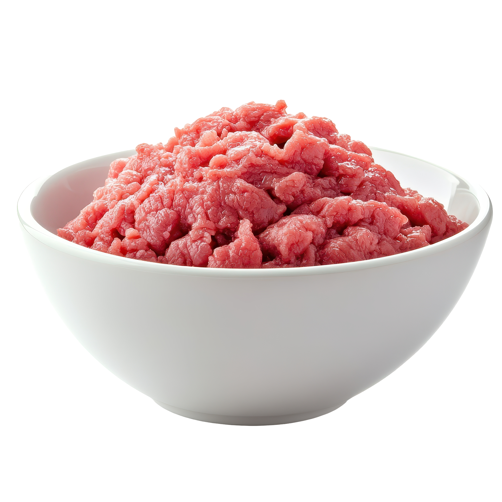
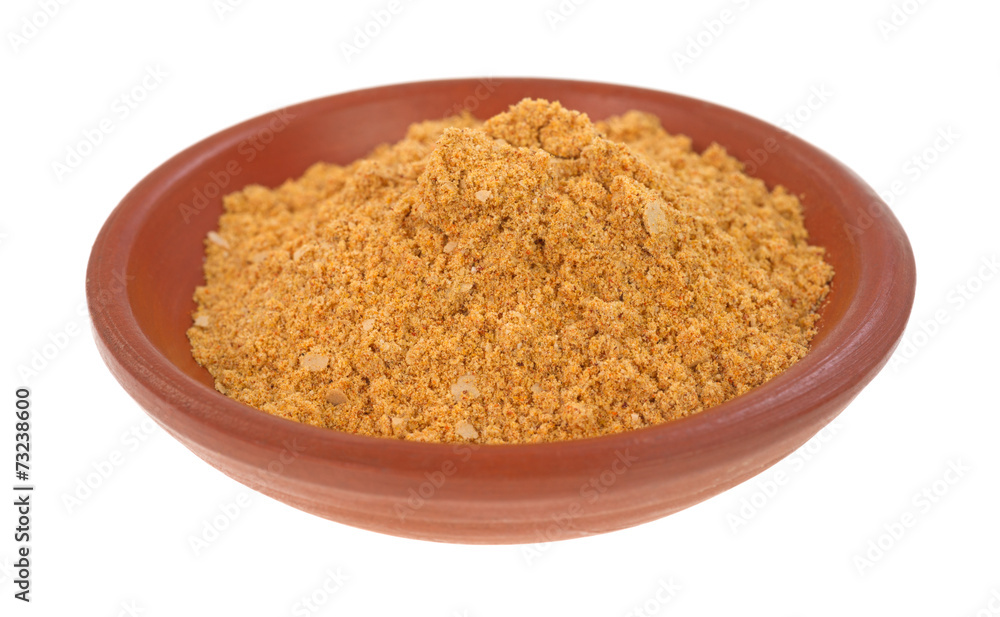
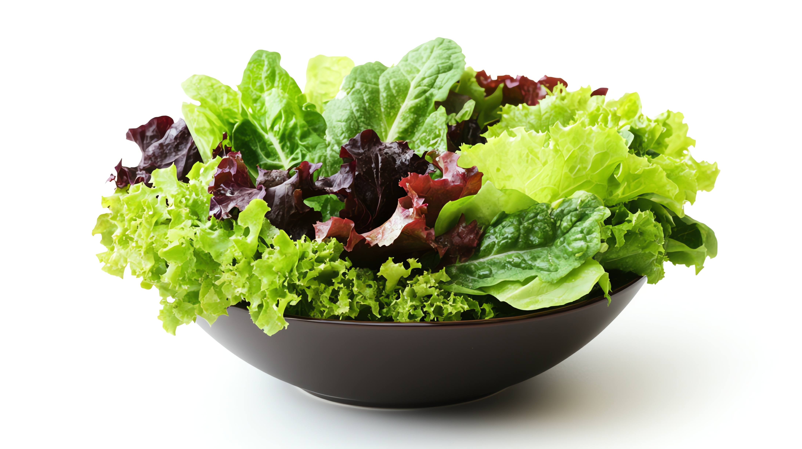
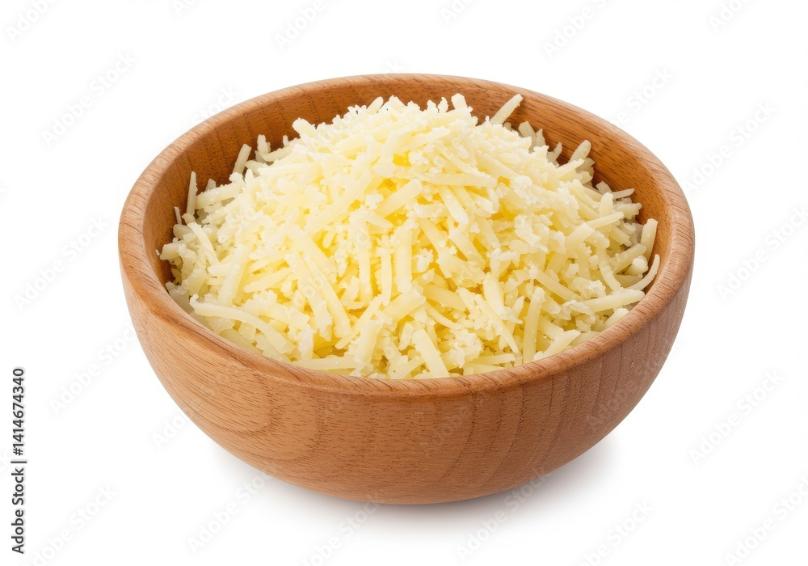

Traditional street tacos are made with soft corn tortillas!

Tacos
Key Ingredient

Corn
The corn tortilla is the foundation of a traditional taco...
Other ingredients

Ground Beef

Taco Seasoning

Lettuce

Cheese
Recipe
Prep: 15min
Cook: 20min
Total Time: 35min
INGREDIENTS
4-6 Servings
For the Taco Filling
- 1 lb ground beef (80% lean)
- 1 packet taco seasoning
- 1/2 cup water
- 1 tbsp olive oil
- 1 small onion, diced
- 2 cloves garlic, minced
For the Toppings
- 12 corn tortillas
- 2 cups shredded lettuce
- 1 cup shredded cheese
- 1 tomato, diced
- 1/2 cup sour cream
- 1/4 cup chopped cilantro
- 1 lime, cut into wedges
PREPARATIONS
Step 1: Prepare the Filling
Heat olive oil in a skillet... cook onion and garlic... add ground beef and brown it.
Step 2: Season the Meat
Add seasoning and water... simmer until thickened.
Step 3: Warm the Tortillas
Use a skillet or oven to warm the corn tortillas.
Step 4: Assemble the Tacos
Fill tortillas with meat and toppings... garnish and serve with lime.